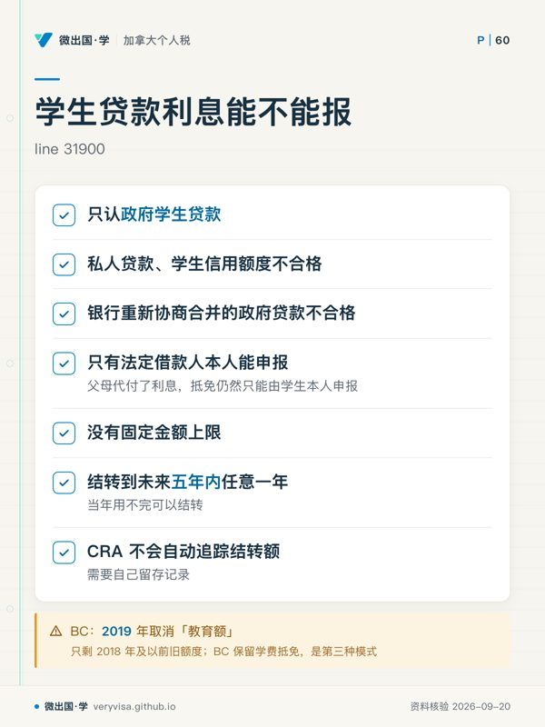
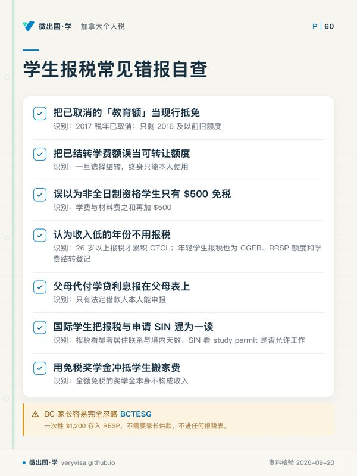

🃏 Flashcards · 3 闪卡 · 3 张 🖼 Slides · 3 幻灯 · 3 页 ✍️ Questions · 7 刷题 · 7 道
T1 个人所得税基础 T1 basics P2 稳住 P2 Hold steady
ZH EN ZH + EN
先看这一章怎么考 First, how this chapter is tested
学费抵免自用优先与转让上限核算题：重点考查附表 11 中学生必须先将自身联邦税抵减至零，当年转让给父母或配偶的上限为法定 $5,000 减去学生已自用额度的扣减计算。 Tuition credit self-use first and the transfer cap: tests on Schedule 11 that the student must first reduce his or her own federal tax to zero, and that the amount transferable to a parent or spouse for the year is capped at the statutory $5,000 minus the amount the student has already used. 学费结转不可逆与单向门实务题：重点考查未用完学费额一旦选择结转到未来年度，即永久失去向父母或配偶转让的资格，只能留给学生本人未来自用的法律硬性约束。 Irreversible tuition carryforward (one-way gate): tests the hard legal rule that unused tuition amounts, once carried forward to a future year, permanently lose eligibility to be transferred to a parent or spouse and can only be used by the student in a future year. 奖学金助学金三档免税待遇分类题：重点考查全日制合格学生全额免税、非全日制资格学生（学费加材料费加 $500 基础免税额）以及非合格教育项目（仅 $500 免税额）的应税金额计算。 Three tiers of scholarship and bursary exemption: tests the taxable amount calculation for full-time qualifying students (fully exempt), part-time qualifying students (tuition + materials + $500 basic exemption) and non-qualifying programs (only the $500 exemption). 最常丢分的陷阱（看到题干信号就警觉） Traps that cost the most marks (watch for the signal in the stem)
学费转让上限未扣自用陷阱 Transfer cap without deducting self-use 题干给出学费金额、学生自用学费额及剩余未用完学费，询问学生最多可向父母或配偶转让的学费抵免额。 The stem gives the tuition paid, the amount the student used personally and the remaining unused tuition, and asks for the maximum tuition credit the student can transfer to a parent or spouse. 结转额度反悔转让陷阱 Changing your mind and transferring a carryforward 题干中出现学生在以前年度已结转的学费额（Unused tuition credits carried forward），询问本年度能否转让给父母或祖父母。 The stem shows tuition amounts the student carried forward in earlier years (unused tuition credits carried forward) and asks whether they can be transferred to a parent or grandparent this year. 非全日制奖学金单纯五百陷阱 Treating part-time as just $500 题干明确提及纳税人为非全日制资格学生（part-time qualifying student），给出学费、考试资料费支出及收到的 T4A 奖学金金额，询问应计入 line 13010 的应税奖学金金额。 The stem states that the taxpayer is a part-time qualifying student, gives tuition, materials costs and the T4A scholarship received, and asks for the taxable scholarship amount to include on Line 13010. 本章考点页：导图、要点表、7 道带逐项解析的练习 →
核实日期：2026-10-30｜本页口径：2026 税年（2027 年 2–4 月申报） 。学费转移上限、RESP 供款上限属长青立法值；Canada Training Credit 的两条累积门槛与联邦税阶挂钩，逐年指数化，下次复核 2027-01-31。
学生这一节，是 T1 报表里唯一按身份 而不是按收入类型 单独拎出来的一块——它横跨奖学金（line 13010）、学费额（line 32300、Schedule 11）、Canada Training Credit（line 45350）、学生贷款利息（line 31900）、搬家费（line 21900）五张不同的行，共同的读者只有一种人：正在读书或供孩子读书的家庭。最常见的疑问是"零收入学生要不要报税"。下面帮你判断学生在没有应税收入的年份该不该也报税，给一笔学费额算清转让给父母还是留给自己结转更划算，并分清奖学金哪些全免税、哪些不是。
一、制度设计与底层逻辑 本节回答 This section answers 阐明学费先自用后转让的立法折中与单向门设计 The legislative compromise of self-use first and the one-way gate
1.1 学费额为什么设计成"个人抵免却可以转让"
学费额（tuition tax credit）在立法结构上是一项非退还抵免——按定义，抵免应该归属于承担这笔支出、需要用它抵税的那个人。但现实是，很多学生当年收入低、税负本来就接近零，一笔学费抵免对他们而言暂时用不上，而供他们读书的父母往往正处在收入高峰期。立法者在"抵免应归属谁"与"钱是谁出的、谁更需要这笔抵免"之间做了折中：学费额本人优先，用不完的当年部分才能选择转让给配偶、父母或祖父母，或者留给自己结转到未来 。转让与结转是两条互斥的路径，选错代价不是罚款，而是白白损失这笔额度本该带来的税务价值——这正是本页第二节要讲清楚的计算题。
1.2 奖学金"全额免税"背后的政策判断
奖学金、助学金、研究员津贴（fellowship）被设计成大多数情况下全额免税，隐含的立法判断是：这不是消费型收入，是对教育投资的资助，不该被当作普通收入课税 。但这条豁免不是无条件的——它绑定在"全日制合格学生"这个身份上，非全日制学生只能享受一个按学费与材料费计算的有限豁免加基础 $500，纯粹的奖项、非教育类津贴则完全不享受这条豁免。身份判断错了，整套豁免逻辑就用不上 ，这是本页第六节案例要单独强调的一点。
1.3 Canada Training Credit：退还性 + 终身累积，鼓励持续再培训
Canada Training Credit（CTC）与前两项的设计逻辑不同：它不是为在校学生设计的，而是为已经在工作、想持续进修的成年人 设计的退还性抵免。退还性意味着即使算到零也不停，多出来的部分真金白银退还；累积制意味着不进修的年份额度也不会作废，而是安静地攒着，直到真的报名一门课时再用。这个设计背后的政策目标很直接：打消"今年没进修就浪费了"的顾虑，鼓励劳动者把再培训摊开在职业生涯的任意时间点 。
1.4 三笔支出各自的法律后果
漏报奖学金的应税部分（如非全日制学生超出豁免额的那一段），CRA 会在核对 T4A 方框 105 与申报表时发现差异，触发重新评税加利息；把已经选择结转的学费额误当作可转让额度转给父母，属于超额申报，CRA 调整后本人可用的结转额也会跟着减少；国际学生把税务居民身份判断错，最常见的后果是漏报应税的加拿大来源收入或误报本不该报的境外收入，两个方向都会引来后续的信息不对称与补税。
节末检索小测 · 先别往回翻，凭记忆作答 Quick recall check: answer from memory before scrolling back
A full-time university student with modest part-time earnings generated a small federal tax liability of $300 in the tax year. The student paid $6,000 in eligible tuition. Under Canadian income tax principles, what governs the allocation of the student's current-year tuition tax credit on Schedule 11?
一名全日制大学生在税年内有少量兼职收入，产生了 $300 的联邦税额。该学生当年支付了 $6,000 的合格学费。根据加拿大所得税制度设计原则，哪项规则统领该学生在附表 11 上对当年学费抵免额的分配？
a The student may freely bypass their own tax liability and transfer the entire $5,000 maximum tuition amount directly to a supporting parent. ✗ 错误。此选项违背了自用优先原则。税法不允许学生跳过自身税额直接全额转让学费抵免。 Incorrect. This option goes against the self-use-first principle. The tax rules do not allow a student to skip his or her own tax and transfer the full tuition credit.
b The student must first use the credit to bring their own federal tax payable to zero; only the rest may be transferred or carried forward. ✓ 正确。学费税收抵免（tuition tax credit）在立法设计上以学生本人为首要抵免主体，纳税人必须首先使用当年学费额将自身联邦应纳税额抵减至零，剩余部分方可选择转让或结转。 Correct. The tuition tax credit is designed by legislation to apply first to the student; the taxpayer must first use the year's tuition amount to reduce his or her own federal tax payable to zero, and only the remainder can be transferred or carried forward.
c The student must carry forward all unused tuition credits until post-secondary graduation before any transfer to family members is permitted. ✗ 错误。税法并未要求必须等到毕业后才能转让，只要当年有扣减自用后的剩余额度即可在当年报税时决定转让。 Incorrect. The tax rules do not require waiting until after graduation to transfer; as long as there is a remainder for the year after self-use, the transfer can be decided when filing for that year.
d The tuition tax credit is converted into an automatic refundable cash transfer deposited into the student's bank account regardless of tax payable. ✗ 错误。学费抵免属于非退还税收抵免（non-refundable tax credit），无法直接作为现金全额退还。 Incorrect. The tuition credit is a non-refundable tax credit and cannot be paid out in full directly as cash.
看答案与每个选项的解析 Show the answer and why each option is right or wrong 答案 Answer ：b
二、2026 税年现行规则与数字 本节回答 This section answers 掌握培训抵免限额累积与学费半数取小的申领公式 How the CTC limit accumulates and the lesser-of-50%-of-tuition formula 本章考题 1 Question 1 本章考题 2 Question 2 本章考题 3 Question 3 本章考题 4 Question 4 本章考题 5 Question 5
2.1 学费额：Schedule 11、转让上限与结转的单向门
合格学费在 line 32000（Schedule 11）汇总，最终计入 line 32300。当年未用完的部分有两条路：转让给配偶/同居伴侣、父母或祖父母 ，或者结转到未来任意一年由本人使用 。转让规则的核心是两句话：① 必须先用自己的学费把自己的联邦税抵到零，剩下的部分才谈转让；② 转让上限是"法定上限 $5,000 减去学生自己已经用掉的那部分当年学费额 "，且不能超过当年未用完的部分（CRA（论坛解读） ）。这道单向门最容易被忽略：一旦某年选择把未用完的部分结转到未来，这笔额度就永久失去被转让的资格，只能由学生本人在未来年度自用 （CRA（论坛解读） ）。$5,000 这个数字是立法固定值，不随年度指数化，考试口径 2024 税年、2025 税年、2026 税年现行都是同一个数。
✕
结转之后想反悔转让，法律上没有回头路
很多家庭到了报税季才发现：孩子前一年把学费额结转了，父母那年正好需要这笔抵免，却已经来不及转让——因为这个选择只能在结转当年做出，一旦结转就锁死了。规划应该提前一年做，不是等到发现需要时才想起来。
2.2 奖学金与助学金：三档免税规则
（CRA ）中小学阶段的奖学金、助学金不论金额一律不课税，这一档不受上表约束。"合格学生"身份是判断要不要报税的第一道门，金额大小是第二步 ——这也是本页第七节自查清单里最容易踩的一条。
2.3 Canada Training Credit：三年对照与考试口径没有点出的终身封顶
考试口径写到 2024 税年为止，把 CTC 描述成"每年 $250、五年累计 $1,250"，没有提到终身上限——因为这个项目 2019 年才设立，考试口径成文时累积额远未触及任何封顶。CRA 现行页直接写明：终身累积上限是 $5,000，按 $250/年的速度，理论上要到大约 2039 年才会有人真正触到这道天花板 （CRA ）。申领时，实际能拿的金额＝当年 CTCL 与合格学费 50% 两者中较小的那个，在 Schedule 11 上计算，line 45350 申报。
ℹ️
CTC 是联邦独有，没有省级对应版本
与学费额不同，Canada Training Credit 只有联邦层面，BC 及大多数省份都没有设立平行的省级培训抵免（P105 明确标注"Provincial or territorial: Not applicable"）。
2.4 学生贷款利息：没有固定上限，但能不能报要看贷款性质
line 31900 只认政府学生贷款 （《加拿大学生贷款法》《加拿大学生经济资助法》《学徒贷款法》及各省对应法律），私人贷款、学生信用额度、或曾被银行重新协商合并过的政府贷款一律不合格（CRA（论坛解读） ）。能申报的只有贷款的法定借款人本人 ——即使父母代付了利息，抵免仍然只能由学生本人申报。这项抵免没有固定金额上限，当年用不完可以结转到未来五年内任意一年使用，但 CRA 不会替纳税人自动追踪这笔结转额，需要自己留存记录。
2.5 RESP：供款、CESG/CLB 与提取的三条分开的路径
RESP 终身供款上限是 50,000 元/每受益人 ，2007 年起未变，属立法值不指数化（CRA（论坛解读） ）。政府补助方面，基本 CESG 是首 $2,500 年供款的 20%（年 $500），终身上限 $7,200；CLB 不需要供款，首年 $500 加每年 $100 至 15 岁、终身 $2,000，且可追溯申请（ESDC ）。取款分三条互不相干的路径：供款本金免税取回；教育资助金（EAP，政府补助 + 累积收益部分）算学生的应税收入，报在 line 13000；累积收益派款（AIP，账户没用完的利息）算供款人的应税收入且要另加 20% 附加税（魁北克居民的联邦附加税为12%，另核省税与合格转存减免）（CRA 、ESDC ）。全日制EAP最初连续13周上限为 8,000 元；非全日制按每个截至付款时的13周窗口，上限为 4,000 元 ，源自 Budget 2023 的一次性上调（此前是 $5,000/$2,500），2023-03-28 起生效，2026 税年沿用未变（ESDC ）；超过限额需要 ESDC 事先批准，只有全日制完成最初连续13周并继续符合条件时，才不再受该初期数额上限；非全日制仍须逐窗口核限额。
2.6 搬家费：40 公里门槛，但能扣的收入范围很窄
学生为了全日制就读搬家，新家须比旧家离学校至少近 40 公里 ，这条门槛与雇员/自雇版本共用同一条规则，多年未变（CRA（论坛解读） ）。关键限制容易被忽略 ：学生版搬家费只能从"需要计入收入"的奖励类收入（如研究资助）里扣除，全日制合格学生的免税奖学金本身不进收入，没有可供抵扣的收入基础——这意味着这条扣除对纯拿免税奖学金的全日制学生实际上很少用得上，主要适用于有研究资助收入或同时打工的学生。
节末检索小测 · 先别往回翻，凭记忆作答 Quick recall check: answer from memory before scrolling back
An eligible 32-year-old worker with a Canada training credit limit (CTCL) of $1,250 on their 2025 Notice of Assessment incurs $2,000 in eligible tuition fees at an eligible educational institution in 2026. What is the maximum Canada Training Credit the worker can claim on line 45350 of their 2026 T1 return?
一位符合资格的 32 岁劳动者在其 2025 年评税通知书（NOA）上显示有 $1,250 的加拿大培训抵免限额（CTCL），2026 年在合格教育机构支付了 $2,000 的合格学费。该劳动者在 2026 年 T1 税表 line 45350 最多可申领多少加拿大培训抵免（CTC）？
a $500, which represents the standard annual accumulation increment for training credits. ✗ 错误。CTC 每年累积增量为 $250 而非 $500，且实际申领金额按 CTCL 与学费 50% 测算。 Incorrect. The CTC accumulates $250 a year, not $500, and the actual claim is measured by the CTCL and 50% of tuition.
b $1,000, which is the lesser of the worker's CTCL balance ($1,250) and 50% of the eligible tuition fees ($1,000). ✓ 正确。根据加拿大培训抵免（Canada Training Credit, CTC）规则，实际申领金额为上一税年评税通知书上的培训抵免限额（CTCL，$1,250）与当年合资格学费 50%（$2,000 × 50% = $1,000）两者中较小者，因此在 line 45350 可申报 $1,000。 Correct. Under the Canada Training Credit (CTC) rules, the amount actually claimed is the lesser of the Canada training credit limit (CTCL, $1,250) on the prior tax year's Notice of Assessment and 50% of the current year's qualifying tuition ($2,000 x 50% = $1,000), so $1,000 can be claimed on Line 45350.
c $1,250, because taxpayers are always entitled to withdraw their full accumulated CTCL balance. ✗ 错误。申领金额受合格学费 50%（$1,000）的封顶限制，不能直接申领全部 CTCL 余额。 Incorrect. The claim is capped at 50% of qualifying tuition ($1,000); the whole CTCL balance cannot be claimed directly.
d $2,000, because the Canada Training Credit fully refunds 100% of tuition fees paid by adult workers. ✗ 错误。CTC 仅能对合格学费的 50% 进行抵免，而非 100% 全额覆盖。 Incorrect. The CTC only covers 50% of qualifying tuition, not 100%.
看答案与每个选项的解析 Show the answer and why each option is right or wrong 答案 Answer ：b
三、实务流程 本节回答 This section answers 理清凭T2202官方凭证填报与转让结转实务路径 Claiming by the official T2202, and the practical path for transfers and carryforwards
第一步，拿到 T2202。 教育机构在次年 2 月底前把 T2202 报给学生也报给 CRA，上面注明学费金额与全日制/非全日制月数。没有 T2202 就没有合格学费额可申报，缺失时应直接联系学校教务处补开，不要自行估算金额填报。
第二步，判断当年该转让还是该结转。 先用自己的学费把自己的税抵到零；如果还有剩余，比较两条路：转让给收入更高、能立刻用上这笔抵免的父母（受 $5,000 上限约束），还是留给自己结转到未来收入变高时使用。结转是不可逆的选择，一旦选定就再也不能转让 ——规划应该在报税当下就想清楚未来一到两年的收入预期，而不是先结转再看情况。
第三步，核对奖学金身份。 先判断"全日制合格学生"身份是否成立，再决定适用哪一档免税规则；身份判断的关键是"是否在设计上需要每周花费足够多时间在课程上"，不是看学生自己主观认为的忙碌程度。
第四步，申领 CTC 前先查 Notice of Assessment。 CTCL 会显示在上一年的评税通知书上，申领前先核对这个数字，而不是凭印象估算；即使当年不打算申领，也要记得报税以维持累积资格。
第五步，国际学生先判断税务居民身份，再决定报什么、用什么号申报。 先看是否建立了显著居住联系（住所、配偶子女、经济社交联系）与境内停留天数，再决定按居民、非居民、推定居民还是推定非居民哪一套规则报税（CRA（论坛解读） ）；没有 SIN 的国际学生，看 study permit 上是否注明"may work"或"may accept employment"——注明的可以申请 SIN，完全不能合法工作的要改申 ITN 用于报税（Employment and Social Develo… ）。
节末检索小测 · 先别往回翻，凭记忆作答 Quick recall check: answer from memory before scrolling back
A college student paid $5,400 in tuition during 2026 but misplaced their institutional login credentials and cannot retrieve Form T2202 before the April 30 filing deadline. How should the preparer handle the tuition tax credit claim on Schedule 11?
一名大专学生在 2026 年支付了 $5,400 学费，但在 4 月 30 日报税截止日前遗失了学校登录凭据，无法获取表格 T2202。报税员应当如何在附表 11 上处理该笔学费税收抵免申报？
a Claim the tuition amount using credit card statements and receipt copies, as CRA allows commercial payment slips in lieu of tax slips. ✗ 错误。银行对账单或支付凭据不能替代官方 T2202 证明书，私自填报会导致系统核对差异。 Incorrect. Bank statements or payment receipts cannot replace the official T2202 certificate, and claiming without it will produce a mismatch when the system checks.
b Enter an estimated tuition amount on Schedule 11 and adjust the figure via a subsequent T1-ADJ after receiving the slip. ✗ 错误。实务流程中严禁自行估算学费金额申报，无正式凭证不应上表。 Incorrect. In practice estimating the tuition amount is strictly forbidden; without the official document the amount should not go on the form.
c Ask the registrar to reissue the official T2202 before claiming, since CRA matches the institution's own filing. ✓ 正确。实务申报学费税收抵免严格以教育机构出具的 T2202（学费与注册证明，Tuition and Enrolment Certificate）为法定依据；教育机构会同步向 CRA 报送数据，缺少 T2202 时必须联系学校补开，切勿自行估算填报。 Correct. In practice the tuition tax credit is claimed strictly on the T2202 (Tuition and Enrolment Certificate) issued by the educational institution as the legal basis; the institution reports the data to the CRA as well, and if the T2202 is missing the school must be asked to reissue it; never estimate and file.
d Claim the tuition as moving expenses on line 21900 to circumvent the requirement for educational tax certificates. ✗ 错误。学费不能混淆为搬家费申报，此举属于严重错报。 Incorrect. Tuition cannot be confused with moving expenses; doing so is a serious misreport.
看答案与每个选项的解析 Show the answer and why each option is right or wrong 答案 Answer ：c
四、联邦之外：BC 省怎么走 本节回答 This section answers 明确BC省取消教育额保留学费额与教育储蓄千二补助 BC eliminating the education amount, and the $1,200 education savings grant
BC 省保留学费抵免 ，转让与结转规则与联邦平行，在省表 BC428 对应行填报；但 BC 省级"教育额"（education amount）已于 2019 年取消 ，只剩 2018 年及以前年度结转下来的旧教育额还能继续使用（BC 省政府 ）。这与考试口径表格里 NL、NS、PEI、MB、NWT、Nunavut 仍保留省级教育额、而 ON、SK、AB 已完全取消省级学费与教育额的格局不同——BC 走的是第三种模式：取消教育额、保留学费额 ，考试口径原表没有单独把 BC 列出来对照，容易被误认为跟 ON/SK/AB 一样彻底取消。
BC 学生还有一项联邦没有的补助：BC Training and Education Savings Grant（BCTESG） ，向合格儿童一次性提供 $1,200 存入 RESP，不需要家长供款即可申请（ESDC ）。这项补助不进任何报税表，是纯粹的账户内补助，容易被家长完全忽略。
节末检索小测 · 先别往回翻，凭记忆作答 Quick recall check: answer from memory before scrolling back
A student attending a post-secondary institution in British Columbia reviews their provincial tax calculation on Form BC428. Which of the following correctly describes the provincial education credits available in BC?
一名在不列颠哥伦比亚省就读大专院校的学生在表 BC428 上查看其省税核算。下列哪项正确描述了 BC 省现行的省级教育类税收抵免？
a BC maintains a provincial tuition tax credit parallel to the federal rules, but eliminated the provincial education amount in 2019. ✓ 正确。BC 省走的是第三种省税模式：表 BC428 保留了与联邦平行的省级学费抵免（provincial tuition tax credit），但省级教育额（education amount）已于 2019 年正式取消，仅保留 2018 年及以前年度结转下来的旧教育额。 Correct. BC follows the third provincial model: Form BC428 keeps a provincial tuition tax credit parallel to the federal one, but the provincial education amount was formally eliminated in 2019, leaving only old education amounts carried forward from 2018 and earlier.
b BC completely eliminated both provincial tuition credits and provincial education amounts, exactly like Ontario and Alberta. ✗ 错误。安省、阿省完全取消了省级学费和教育额，而 BC 省保留了学费抵免，仅取消了教育额。 Incorrect. Ontario and Alberta completely eliminated the provincial tuition and education amounts, while BC kept the tuition credit and eliminated only the education amount.
c BC provides a full monthly provincial education amount and exam amount of $400 per full-time study month. ✗ 错误。BC 省教育额已于 2019 年取消，不再按月提供新的教育额抵免。 Incorrect. The BC education amount was eliminated in 2019 and no new monthly education amount credit is provided.
d BC replaces provincial tuition credits with an automatic provincial student loan interest deduction on line 31900. ✗ 错误。line 31900 属于学生贷款利息抵免，与学费抵免属于完全不同的税目。 Incorrect. Line 31900 is the student loan interest credit, a completely different tax item from the tuition credit.
看答案与每个选项的解析 Show the answer and why each option is right or wrong 答案 Answer ：a
五、历史变革 本节回答 This section answers 把握联邦教育额取消历史与RESP初期提取限额调整 History of eliminating the federal education amount and adjusting the RESP initial limits
学费额的转让与结转机制本身没有变化，考试口径与现行法在这一点上高度一致——真正的变化在教育额与教科书额 ：这两项联邦抵免已于 2017 税年 被取消，此后学生只能申报学费额本身，2016 及以前年度结转下来的旧教育/教科书额仍可继续使用直到用完。这不是本轮变化，而是一段已经过去九年的历史，但仍有相当一部分学生和家长以为"教育额"还能申报 ，这是本页第七节自查清单的第一条。
Canada Training Credit 是相对年轻的项目，由 2019 年预算设立、2020 税年起可以实际申领。考试口径成文于该项目推行的第五年，只写到"五年累计 $1,250"为止，没有触及、也没有点出终身封顶——这正是本页第二节三列表里最值得单独标注的一条：考试口径没写错，只是写到的那个时点还看不到终身上限这道设计 。
RESP 的 EAP 提取限额也有一段历史：2023 年之前 首 13 周提取限额是全日制 $5,000、非全日制 $2,500，Budget 2023 把两项限额分别提高到 $8,000 与 $4,000，2023-03-28 起生效（ESDC ）。考试口径（2024/2025 学年版）已经反映了上调后的数字，2026 税年沿用未变——这是一条"看起来会年年指数化、实际是一次性立法调整后长期不变"的数字，年度更新时不必年年重查，只需确认没有新预算再度调整。
T2202 表本身也在 2019 年经历过一次变化：旧的 T2202A（只给学生）被 T2202 取代，教育机构须同时 把学生的社会保险号报送给 CRA，不只是把证明书交给学生自己保管。
节末检索小测 · 先别往回翻，凭记忆作答 Quick recall check: answer from memory before scrolling back
Students could once claim federal education and textbook amounts in addition to tuition fees. In which tax year were the federal education and textbook amounts eliminated?
学生过去除了学费额，还能申报联邦教育额与教科书额。联邦教育额与教科书额是从哪一个税年起取消的？
a The 2017 tax year; since then only tuition can be claimed, apart from pre-2017 carried-forward amounts. ✓ 正确。联邦教育额与教科书额已于 2017 税年取消，此后学生只能申报学费额本身；2016 及以前年度结转下来的旧教育／教科书额仍可继续使用直到用完。 Correct. The federal education and textbook amounts were eliminated for the 2017 tax year; since then students can claim only the tuition amount itself, though old education and textbook amounts carried forward from 2016 and earlier can still be used until used up.
b The 2019 tax year, coincident with the elimination of the provincial education amount in British Columbia. ✗ 错误。2019 年是 BC 省取消省级教育额及 T2202 表格改革的年份，联邦教育额取消是在 2017 税年。 Incorrect. 2019 is the year BC eliminated the provincial education amount and the T2202 form was reformed; the federal education amount was eliminated for the 2017 tax year.
c The 2023 tax year, as part of the Budget 2023 changes that increased the RESP withdrawal threshold. ✗ 错误。Budget 2023 调整的是 RESP 的 EAP 提取上限（上调至 $8,000 与 $4,000），与教育额取消无关。 Incorrect. Budget 2023 changed the RESP EAP withdrawal limits (raised to $8,000 and $4,000) and has nothing to do with eliminating the education amount.
d The 2026 tax year, under the legislative package that introduced the Canada Groceries and Essentials Benefit. ✗ 错误。联邦教育额已被取消达九年之久，绝非 2026 年的新政。 Incorrect. The federal education amount was eliminated nine years ago, and is certainly not a new measure for 2026.
看答案与每个选项的解析 Show the answer and why each option is right or wrong 答案 Answer ：a
六、案例 本节回答 This section answers 掌握学费转让上限扣除自用与国际生工卡号申请判定 Deducting self-use from the tuition transfer cap, and whether an international student can get a SIN
案例一：本拿比的双职工家庭，转让还是结转？ 张先生的女儿 2026 年就读大学，学费 $9,000，她当年净收入很低，用 $2,000 把自己的税抵到零，剩余 $7,000 未用完。按规则，转让上限是 $5,000 减去她自己已用的 $2,000，所以最多能转让 $3,000 给父亲，剩下的 $4,000 只能结转（常见算错：以为未用完 $7,000 超过 $5,000 就能转满 $5,000）。张先生当年边际税率较高，$3,000 转让给他能立即抵掉一笔实打实的税；女儿如果预计毕业后收入会显著提高，把这笔转让上限用满、把剩余部分结转到自己未来高收入的年份，通常比"全部结转、什么都不转让"更划算——这正是"转让优先用满上限、剩余部分再结转"这条经验法则的由来 。
案例二：素里的兼职大专新生，零收入年份为什么也要报税。 王同学 2026 年只在便利店兼职几个月，年收入 $6,000，扣除基本个人金额后完全没有应缴税款，很多学生因此觉得"不用报"。但报税是拿到 Canada Groceries and Essentials Benefit（CGEB，2026 年 7 月起取代原 GST/HST 抵免；年满 19 岁后才有资格）与相关福利、把这 $6,000 劳动收入记成次年 RRSP 额度（按 18% 约 $1,080）、以及正式记录当年学费额结转数字的途径——不报税，学费结转额不会登记在 Notice of Assessment 上，未来想用的时候反而说不清楚金额。CTCL 不在这份清单里：它只在年末已满 26 岁、且上一年劳动收入达到门槛（建 2026 额度为 12,058 元）的年份才累积，大专新生的年龄和这点收入都够不上。零收入不等于零理由 ，恰恰是这个阶段最该养成报税习惯的原因。
案例三：列治文的国际留学生，居民身份与 SIN/ITN 的混淆。 陈同学持 study permit（注明允许工作）来温哥华全日制就读，第一年 11 月才抵达，当年在加拿大境内只待了 62 天，原籍国仍保留主要住所、没有携配偶子女、没有在加拿大建立经济或社交上的重大联系。他既没有显著居住联系，境内天数也远不到 183 天的推定居民门槛，按现行规则通常落在非税务居民 一档，只需就当年加拿大来源收入（如兼职工资）报税。同时，因为他的 study permit 本身注明"may work"，他可以直接凭这份文件申请 SIN ，不需要改申 ITN——身份判定与证件条款是两件互不决定对方的事。
节末检索小测 · 先别往回翻，凭记忆作答 Quick recall check: answer from memory before scrolling back
An international university student arrived in British Columbia in late November 2026, staying 45 days during the tax year. The student retains a permanent residence abroad, has no dependants, and holds a valid study permit marked 'may accept employment.' Which tax filing classification and identifier apply to this student for 2026?
一名国际留学生于 2026 年 11 月下旬抵达 BC 省，税年内在境内停留 45 天。该学生在境外保留永久住所，无受抚养人，持有注明“may accept employment”的有效学习许可。2026 年该学生适用哪种纳税人分类及报税证件号？
a Deemed resident under the 183-day rule; must obtain an Individual Tax Number (ITN) because international students cannot hold a SIN. ✗ 错误。境内停留仅 45 天远未达到 183 天推定居民门槛，且学习许可注明允许工作即可申请 SIN。 Incorrect. A stay of only 45 days in Canada is far below the 183-day deemed resident threshold, and a study permit that allows work is enough to apply for a SIN.
b Non-resident: no significant residential ties and under 183 days; may get a SIN because the permit allows work. ✓ 正确。该留学生未建立显著居住联系且停留远未满 183 天，属于非税务居民（non-resident for tax purposes），仅需就加拿大来源收入报税；同时因学习许可（study permit）注明允许工作，可凭此直接向加拿大服务部申领社会保险号（SIN）。 Correct. The international student has not established significant residential ties and stayed well under 183 days, so is a non-resident for tax purposes and need only file on Canadian-source income; and because the study permit states that work is allowed, the student can apply directly to Service Canada for a Social Insurance Number (SIN).
c Factual resident for tax purposes; strictly prohibited from filing a Canadian T1 return until holding Canadian permanent residency. ✗ 错误。留学生报税与是否持有枫叶卡无关，且缺乏显著居住联系不构成事实居民。 Incorrect. An international student's filing has nothing to do with holding a maple leaf card (permanent resident card), and lacking significant residential ties does not make a person a factual resident.
d Deemed non-resident; must pay a mandatory 25% flat withholding tax on all foreign study allowances and cannot claim tuition credits. ✗ 错误。境外资助或生活费不属于加拿大预提税征税范围，分类判断也存在错误。 Incorrect. Funding from abroad or living allowances are not within the scope of Canadian withholding tax, and the classification is also wrong.
看答案与每个选项的解析 Show the answer and why each option is right or wrong 答案 Answer ：b
七、常见错报与自查清单 本节回答 This section answers 排查搬家费抵扣受限与代付贷款利息主体错报陷阱 Traps in limits on deducting moving expenses and who may claim interest paid on someone's behalf
把已经取消九年的"教育额"当作现行抵免申报 ——识别：联邦教育额与教科书额已于 2017 税年取消，2026 税年只能申报学费额本身，除非是 2016 及以前年度结转下来的旧额度。把已经结转的学费额误当可转让额度转给父母 ——识别：只有当年未用完、且尚未选择结转的部分才能转让；一旦选择结转，这笔额度终身只能本人使用。误以为非全日制资格学生的奖学金只有 $500 免税额 ——识别：非全日制资格学生的免税额是该项目所需学费与材料费之和再加 $500，不是单纯的 $500。认为收入低的年份不用报税 ——识别：年末已满 26 岁、劳动收入达到门槛且净收入不超上限的年份，报税是累积次年 CTCL 的必要条件，不报就攒不上；年轻学生零收入那几年，CGEB、RRSP 额度与学费结转登记同样都靠报税。把父母代付的学生贷款利息算在父母自己的报税表上 ——识别：能申报这项抵免的只有贷款的法定借款人本人，谁实际付钱不影响申报资格。国际学生把"能不能报税"和"能不能申请 SIN"混为一谈 ——识别：税务居民身份看的是显著居住联系与境内天数，能否申请 SIN 看的是 study permit 是否注明允许工作，两件事分别判断。用免税奖学金去冲抵学生搬家费 ——识别：搬家费只能从需要计入收入的奖励类收入（如研究资助）里扣除，全额免税的奖学金本身不构成收入，没有可供抵扣的基础。
节末检索小测 · 先别往回翻，凭记忆作答 Quick recall check: answer from memory before scrolling back
A full-time graduate student incurring $3,000 in moving expenses to begin a degree program received a $12,000 post-secondary fellowship that qualifies for the full scholarship exemption. The student had no employment or research assistant income. Can the student deduct the moving expenses on line 21900?
一名全日制研究生为就读学位课程发生了 $3,000 搬家费，税年内获得一笔 $12,000 符合全额免税条件的高校奖学金。该学生没有受雇或助研收入。该学生能否在 line 21900 扣除该笔搬家费用？
a Yes, because moving expenses incurred by full-time students can be applied against any scholarship received during the year. ✗ 错误。全日制免税奖学金不计入收入，不能作为搬家费扣除的资金基础。 Incorrect. A full-time tax-exempt scholarship is not included in income and cannot be the funding base for deducting moving expenses.
b No; student moving costs are deductible only against taxable award or employment income, and an exempt scholarship gives none. ✓ 正确。搬家费（moving expenses, line 21900）对学生有一项硬性限制：只能从需要计入应税收入的奖励类收入（如应税研究资助）或工薪中抵扣。全额免税的奖学金不计入净收入，因此没有可供抵扣的基础。 Correct. Moving expenses (Line 21900) have a hard limit for students: they can be deducted only against taxable award income (such as taxable research grants) or employment income. A fully exempt scholarship is not included in net income, so there is no base to deduct against.
c Yes, but the moving expense deduction must be transferred to the student's parents on Schedule 11. ✗ 错误。搬家费不能转让给父母，且附表 11 专用于计算学费抵免与培训抵免。 Incorrect. Moving expenses cannot be transferred to parents, and Schedule 11 is used only to calculate the tuition credit and the training credit.
d No, because post-secondary student moving expenses are strictly limited to moves exceeding 100 kilometres rather than 40 kilometres. ✗ 错误。学生搬家费的法定距离门槛同样是 40 公里，而非 100 公里。 Incorrect. The statutory distance threshold for student moving expenses is also 40 km, not 100 km.
看答案与每个选项的解析 Show the answer and why each option is right or wrong 答案 Answer ：b
术语双语表
主要参考 ：CRA "Line 45350 – Canada training credit"（CRA ）· P105 "Students and Income Tax 2025"（CRA ）· "Line 31900"（CRA（论坛解读） ）· "Line 21900 – Moving expenses"（CRA（论坛解读） ）· "Taxes for International students studying in Canada"（CRA（论坛解读） ）· Service Canada "Apply for a SIN"（Employment and Social Develo… ）· ESDC "Pay for education using the RESP"（ESDC ）· BC "Basic personal income tax credits"（BC 省政府 ）· CRA "Transferring and carrying forward amounts"（CRA（论坛解读） ）· "Line 13010"（CRA ）· "Line 13000"（CRA ）· "Estimating RESP amounts"（ESDC ）· "RESP contributions"（CRA（论坛解读） ）。
想检验自己，可以做本板块的练习题（共 124 道）：按主题练习 。
本页知识卡 不看正文也能拿到这一节的核心内容：先看导读，再看图。点图放大，左右翻页。
放大 ⤢ 转让与结转是两条互斥的路径 先看 先看右栏最后一格，避免到了报税季才发现来不及。易漏 合格学费在 line 32000（Schedule 11）汇总，最终计入 line 32300。下一步 去练习，带着当年是否转让的问题找持牌专业人士。详情与分享 → 
放大 ⤢ 能不能报先看贷款性质，再看法定借款人 先看 先看前三项，把贷款性质和银行重新协商分开判断。易漏 政府学生贷款包括各省对应法律；谁实际付钱不影响申报资格。下一步 去练习，带着是否被银行重新协商的问题找持牌专业人士。详情与分享 → 
放大 ⤢ 不同资格、年度与申报人要分别判断 先看 先看国际学生那一项，因为两件事要分别判断。易漏 搬家费只能从需要计入收入的奖励类收入里扣除。下一步 去练习，把自己的报税表逐项对照；不确定时找持牌专业人士。详情与分享 → 本站依据官方原文自撰 · 出处见正文链接